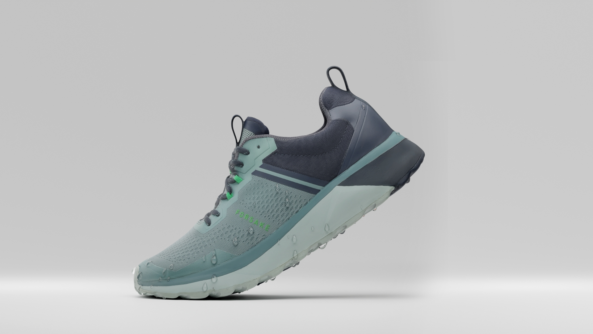

BLOOM eco-friendly algae-based EVA footbed thanks helps clean polluted water habitats.
Elastic lace keep to secure lace loops.
Waterproof/breathable membrane beneath the mesh protects high-contact areas.
Engineered mesh optimized for breathability and wear resistance.
4mm lug depth and dual compound rubber deliver aggressive traction without sacrificing durability.
No-sew TPU reinforces high abrasion areas for rugged durability.